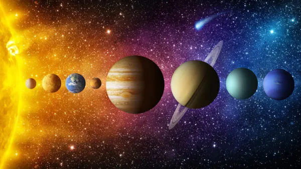

O Sistema Solar

Até o século XVI, acreditava-se que a Terra era o centro do universo. Que tudo, inclusive o Sol, girava em torno do eixo de nosso planeta. Mais tarde, com Nicolau Copérnico, começou-se a considerar a ideia de que o Sol seria o centro do universo. Os anos se passaram e nossos conhecimentos sobre o espaço se desenvolveram. Chegamos à resposta de que existe um grande infinito: galáxias, outros planetas, estrelas maiores que o Sol. Por fim, vimos que o Sol influenciava diretamente a órbita de oito planetas, dentre eles, a Terra.
O Sistema Solar é formado pelo Sol e pelos planetas: Mercúrio, Vênus, Terra, Marte, Júpiter, Saturno, Urano e Netuno. Os planetas seguem essa ordem partindo, como ponto inicial, o Sol. Não só os planetas que circulam em torno do Sol: existem estrelas, satélites naturais (chamadas de luas) e outros corpos espaciais. Todo o Sistema Solar está dentro de algo maior: a Via Láctea (a galáxia formada por milhares de estrelas e corpos celestes e que abriga o Sistema Solar).
Origem do Sistema Solar
O Sol e o Sistema Solar tiveram origem há 4,5 bilhões de anos a partir de uma nuvem de gás e poeira que girava ao redor de si mesma. Sob a ação de seu próprio peso, essa nuvem se achatou, transformando-se num disco, em cujo centro formou-se o Sol. Dentro desse disco, iniciou-se um processo de aglomeração de materiais sólidos que, ao colidirem, deram origem aos planetas.
Os planetas mais distantes do Sol são compostos por mais matéria gasosa, como Júpiter, Saturno, Urano e Netuno. Já os planetas mais próximos – Mercúrio, Vênus, Terra e Marte – são rochosos, pois o calor do Sol evaporou os materiais mais leves.
Planetas do Sistema Solar
Os planetas não produzem luz, apenas refletem a luz do Sol. Eles foram formados a partir de massas incandescentes e estão em processo de resfriamento. Um planeta é um corpo que não tem luz própria e orbita uma estrela.
Os oito planetas que compõem o Sistema Solar são: Mercúrio, Vênus, Terra, Marte, Júpiter, Saturno, Urano e Netuno, nesta ordem de afastamento do Sol. Eles têm forma aproximadamente esférica e realizam os movimentos de rotação e translação.
Movimento de Rotação
No movimento de rotação, os planetas giram em torno de seu próprio eixo. Na Terra, esse movimento dura cerca de 24 horas, gerando o ciclo do dia e da noite. A rotação faz com que diferentes regiões do planeta sejam iluminadas ao longo do dia.
Movimento de Translação
Esse movimento é o que os planetas fazem ao redor do Sol. A Terra leva aproximadamente 365 dias e 6 horas para completar uma volta, formando o chamado ano. A órbita terrestre é ligeiramente elíptica. A posição do eixo da Terra em relação ao Sol causa as estações do ano.
No verão do Hemisfério Sul (dezembro a março), os raios solares incidem mais diretamente sobre essa região. No inverno (junho a setembro), a exposição solar é maior no Hemisfério Norte. As estações são invertidas entre os hemisférios. Perto da linha do Equador, o calor é constante o ano todo, com variações entre períodos secos e chuvosos. Já nas regiões polares, os raios solares chegam com baixa intensidade, tornando-as muito frias.